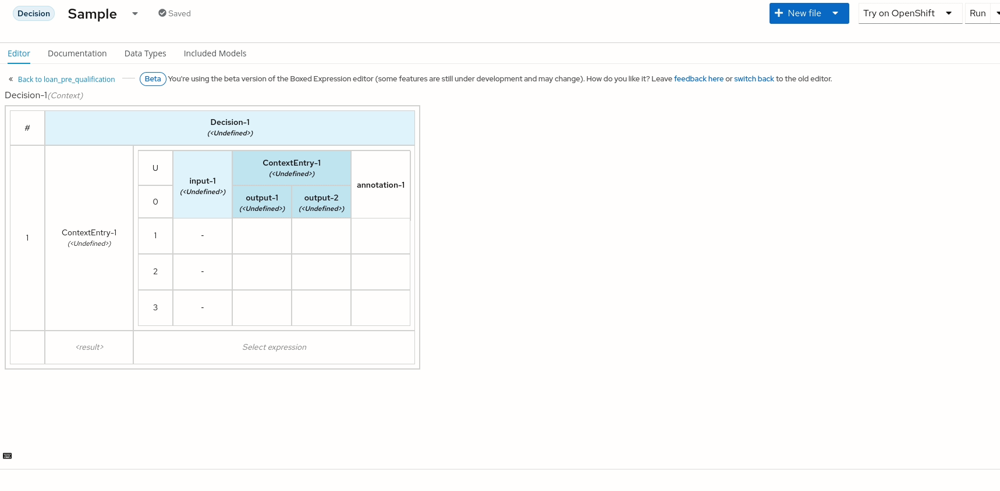
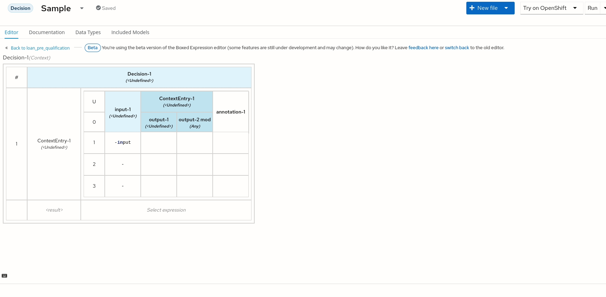

An improved ‘Spreadsheet like’ experience on DMN Editor
The boxed expression editor is a key component of the DMN Editor. In previous articles, we introduced the new implementation of this component.
In this article, I’ll show how I extended the component, implementing the keyboard navigation for faster DMN editing.
Requirements
- VSCode (1.46.0+);
- DMN Editor plugin (0.20.0+);
Here, there is a ready-to-use online version of the DMN editor to try the new functionality.
The new keyboard navigation
The editing of a decision in the DMN Editor was based on the mouse interaction requiring the user to continuously switch between keyboard and mouse, resulting in a time-consuming activity.
As my first task on the project, I worked on implementing a user experience as much as possible similar to Google Spreadsheet. As a result, the user can edit an expression, cell by cell, seamlessly using only the keyboard.
The new keyboard actions available in “view mode”
Navigation between cells is now available in any type of expression using the arrow keys to go UP, RIGHT, DOWN, and LEFT, in a natural way.
Continuous navigation is available with TAB, to jump to the next cell, or SHIFT-TAB to jump to the previous cell. This with the exception that if you are at the end of the row, you jump to the first cell of the next row or the last cell of the previous row if you are on the first cell of the row.
After you choose the cell you want to edit, you just start writing the content, and this way, you erase the already existing content, if there is any. In addition, if you just want to start editing from the end of the cell’s content, you just need to press ENTER and start typing your content.
Differently from a normal Spreadsheet, we have particular cells with nested tables or cells that don’t have just text, and when you click on them, a pop-up with a few inputs will appear, used in different cases.
In this last case, you can now open the pop-up by pressing ENTER, and then you jump between the inputs inside the form using TAB/SHIFT-TAB. ENTER/ESC will close the pop-up and save or cancel your changes.
For the case of nested tables, for instance, a "Context expression" with a Decision Table inside, you can jump inside the nested table with ENTER key and come back to the parent table with ESC.

The new keyboard actions available in “edit mode”
When you finish editing a cell, and you want to apply your changes, using TAB/SHIFT-TAB you save and jump directly to the next or previous cell, or to the cell below with ENTER.
On the contrary, you can press ESC to cancel your changes to the cell.
A big change to the UX was the introduction of the "newline" in the Decision Table’s cells, using the CTRL-ENTER. This change impacted the logic of the "copy & paste" that was based on single-line cells.
To achieve that, the new logic is based on the Papa Parse parser, and now you can just copy your data to or from a Spreadsheet.

The implementation
The work has been mainly focused on the boxed-expression-component package inside kie-tools repository.
The main obstacle to implementing all these functionalities was the communication between React custom and third-party components and highlighting the selected cell.
The easiest way was possibly the use of the “contenteditable” attribute, but that required a full rewriting of the components for the table and cells.
After an evaluation of 4 other solutions, we decided to listen to the keyboard events from the TD HTML element representing the cell, then show the highlight through the “:focus” CSS selector. This way managing the "onBlur" event or memorizing the selected cell is not needed.
Instead, when the focus is on the input, which is actually a Monaco editor, the highlight needs to be on the component inside the cell, that has the state data. This is done by adding the CSS class "editable-cell–edit-mode" to the main tag of the component EditableCell.
Then to ensure the stability of the component we use "Jest" and "@testing-library/react" to render components. For the E2E test, we use "Cypress", which currently doesn’t support TAB key simulation which we managed with the Cypress Real Events plugin.
Conclusion
Creating or modifying a Decision can be a time-consuming activity if you have a lot of data to add inside. Giving the user the ability to write that data quickly and in the way, he was used to, was very important to us. We also didn’t want the user to learn a new way for that, and we wanted to give the same experience as Google Spreadsheet or Excel.